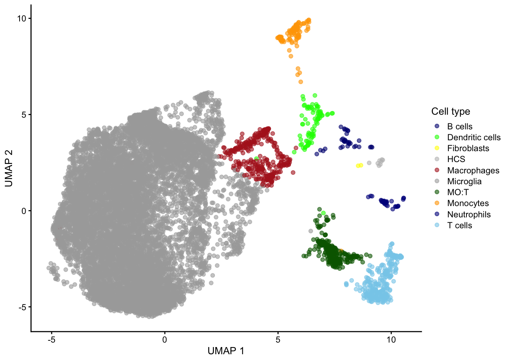
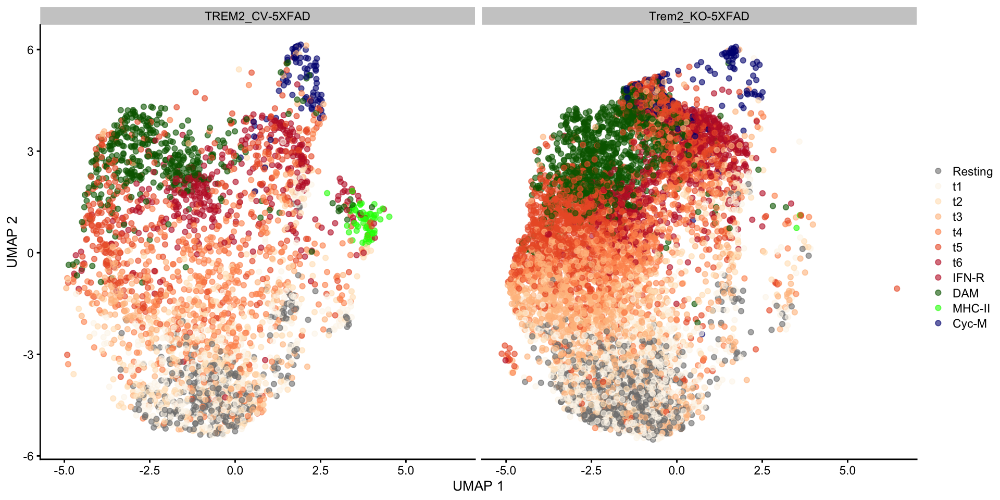
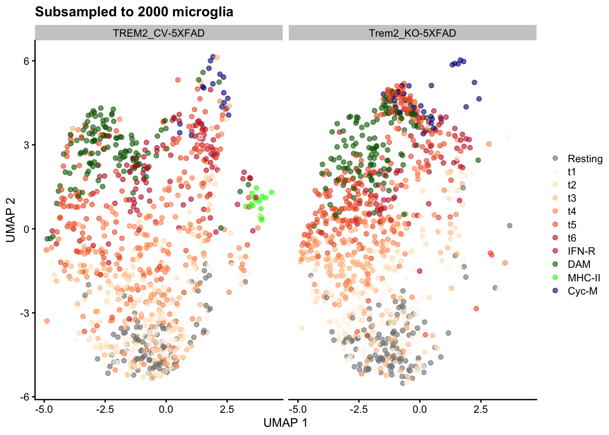
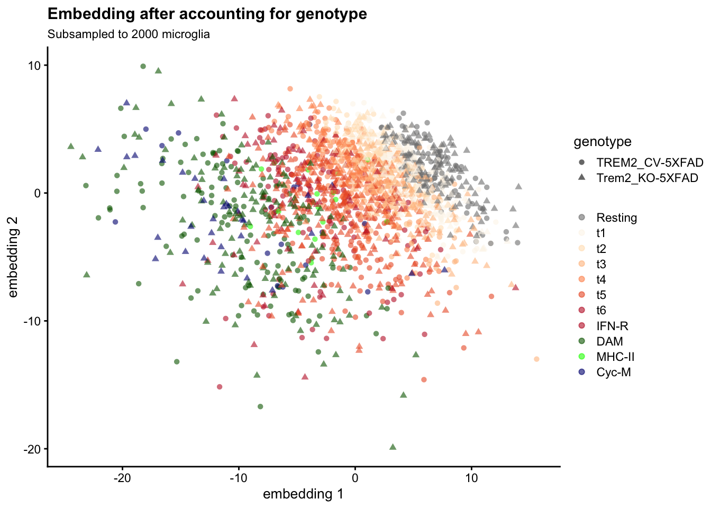
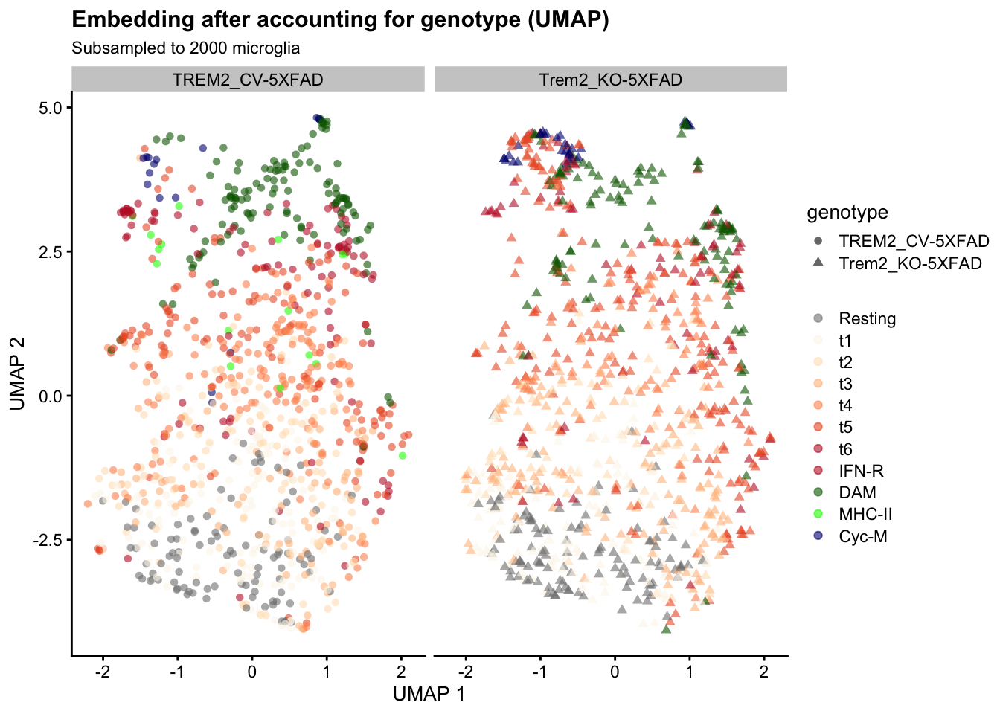
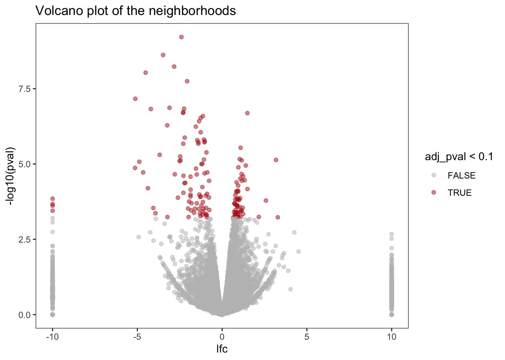
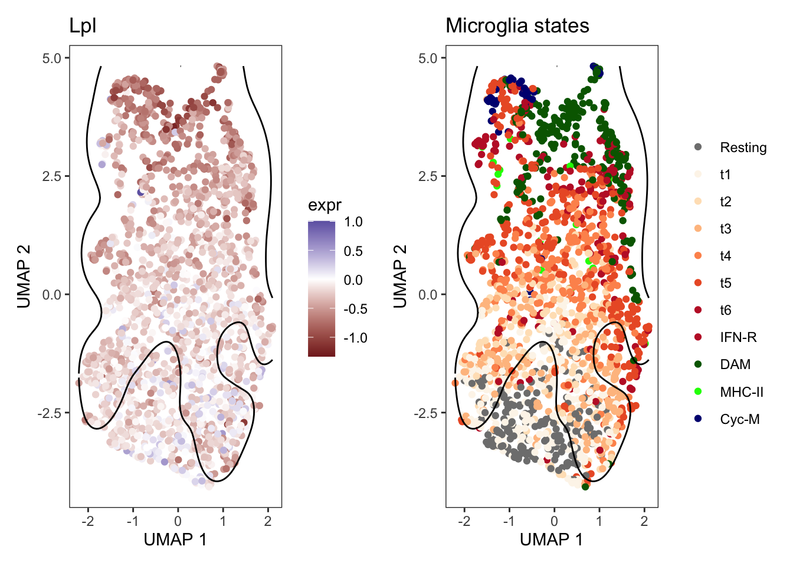
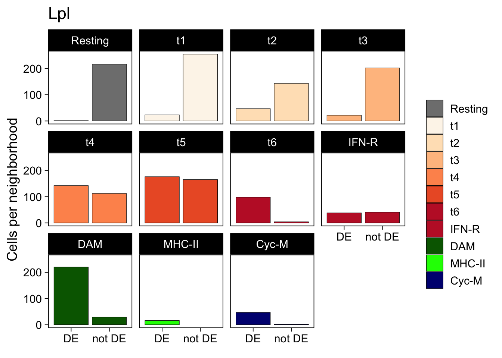
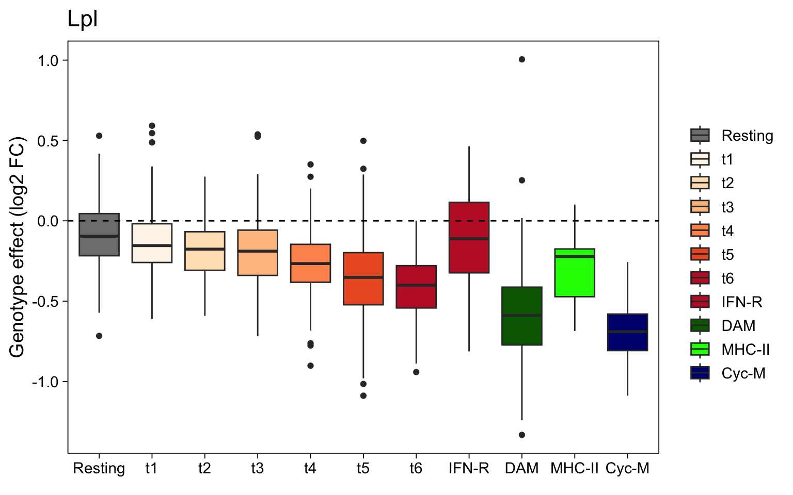

library(dplyr)
library(Matrix)
library(org.Mm.eg.db)
library(patchwork)
library(purrr)
library(readr)
library(scater)
library(SingleCellExperiment)
library(tidyr)This week, Constantin Ahlmann-Eltze and Wolfgang Huber published a preprint describing LEMUR, a new approach to analyzing single-cell experiments that include samples from multiple conditions, e.g. drug treatments, disease-status, etc.
To date, such analyses often involve two separate steps, e.g.
- Defining clusters of cells, e.g. cell types or states
- Differential expression analysis within each cell type
In contrast, LEMUR considers the continuous latent space the individual cells occupy, incorporating the design of the experiment, and then performs differential expression analysis in this embedding space.
An R package implementing LEMUR is available from github and includes an example dataset 1.
Ellwanger et al: Comparing Trem2 wildtype and knock-out mouse microglia
Here, I am exploring LEMUR by examining scRNA-seq data published by Ellwanger et al, 2021, who injected three strains of 5XFAD mice, a murine model of familial Alzheimer’s Disease, either
- carrying the wild-type (WT) Trem2 gene,
- carrying the R47H Trem2 variant, believed to be a loss-of-function variant,
- or completely lacking Trem2 expression
with either a Trem2 agonist (hT2AB) or a negative control antibody (hIgG1).
48 hours later, the authors isolated CD45-positive 2 cells from the cortex and performed single-cell RNA-seq analysis using the 10X Genomics platform.
Retrieving the data
Ellwanger et al made both raw and processed data available via the NCBI GEO and SRA repositories under GEO accession GSE156183.
They also included complete metadata for each cell, making this a great dataset for re-analysis.
Let’s start by retrieving the
files from GEO and store them in a temporary directory:
temp_dir <- file.path(tempdir(), "ellwanger")
dir.create(temp_dir, showWarnings = FALSE, recursive = TRUE)
options(timeout = 360)
url_root <- paste0("https://www.ncbi.nlm.nih.gov/geo/download/?acc=",
"GSE156183&format=file&file=GSE156183%5F")
raw_counts <- file.path(temp_dir, "counts.mtx.gz")
download.file(
paste0(url_root, "RAW%2Emtx%2Egz"),
destfile = raw_counts)
cell_metadata <- file.path(temp_dir, "cell_metadata.tsv.gz")
download.file(
paste0(url_root, "Cell%5Fmetadata%2Etsv%2Egz"),
destfile = cell_metadata)and read the sparse count matrix into our R session:
m <- Matrix::readMM(raw_counts)
cell_anno <- readr::read_tsv(cell_metadata, show_col_types = FALSE)
stopifnot(nrow(cell_anno) == ncol(m))
Note
Unfortunately, the GSE156183_Feature_metadata.tsv.gz feature (= gene) annotation file the authors deposited with GEO actually contains cell annotations. But luckily, they also deposited counts matrices in TSV format for each sample, which include the ENSEMBL gene identifier for each row.
Here, I download the TAR archive that contains all of the TSV files, and then extract the gene identifiers from one of the files so I can add them to the experiment-wide raw count matrix.
selected_sample <- "GSM4726219_RAW-R47H-male-IgG-rep2.tsv.gz"
tar_archive <- file.path(temp_dir, "RAW.tar")
download.file(
"https://www.ncbi.nlm.nih.gov/geo/download/?acc=GSE156183&format=file",
destfile = tar_archive)
utils::untar(tar_archive, files = selected_sample, exdir = tempdir())
gene_ids <- readr::read_tsv(file.path(tempdir(), selected_sample),
col_select = any_of("feature_id"),
show_col_types = FALSE) %>%
dplyr::pull(feature_id)
stopifnot(length(gene_ids) == nrow(m))
row.names(m) <- gene_idsCreating a SingleCellExperiment object
Now I have all the pieces of information required to create a SingleCellExperiment:
- the raw counts (in the form of a sparse matrix),
- the cell annotations (in the form of a data.frame)
- the two UMAP dimensions used by the authors (included in the cell metadata).
I choose to retain only a subset of the (many) cell-level annotation columns, add gene symbols as row annotations, extract the UMAP coordinates into a separate matrix - and store all of it in the sce object.
Next, I am removing cells without an assigned cell type, and also add a coarser cell type annotation that collapses the different microglia states reported by the authors into a single category. Finally, I filter genes without a valid gene symbol and add an assay slot with the normalized log2 counts.
col_data <- cell_anno %>%
dplyr::select(cell_id, celltype, sample, sex, genotype, treatment,
starts_with("QC.")
) %>%
as.data.frame() %>%
tibble::column_to_rownames("cell_id")
colnames(m) <- row.names(col_data)
row_data <- data.frame(
symbol = AnnotationDbi::mapIds(org.Mm.eg.db, keys = gene_ids,
column = "SYMBOL", keytype = "ENSEMBL"),
row.names = gene_ids
)
umap <- cell_anno %>%
dplyr::select(ends_with("CD45pos")
) %>%
as.matrix()
row.names(umap) <- colnames(m)
colnames(umap) <- paste("UMAP", seq.int(ncol(umap)))
sce <- SingleCellExperiment(
assays = list(counts = m),
rowData = row_data,
colData = col_data,
reducedDims = list(UMAP = umap)
)
sce <- sce[, !is.na(sce$celltype)]
sce$celltype_coarse <- dplyr::case_when(
grepl(x = sce$celltype, pattern = "Microglia") ~ "Microglia",
TRUE ~ sce$celltype
)
sce$treatment <- factor(sce$treatment, levels = c("IgG", "hT2AB"))
sce$mg_type <- factor(sub("Microglia.", "", sce$celltype, fixed = TRUE))
sce <- sce[!is.na(rowData(sce)$symbol), ]
sce <- logNormCounts(sce)
rm(list = c("m", "cell_anno", "gene_ids", "row_data", "col_data"))This SingleCellExperiment object is now ready for downstream analysis.
Subsetting the experiment to samples of interest
This study contains multiple experimental variables, e.g. each sample is annotated with one of the three genotypes, one of two treatments and the sex for each mouse.
Here, I will focus only on the difference between TREM2 wildtype and TREM2 knock-out animals treated with the IgG control antibody. Only female knock-out animals were included in the study, so I exclude the male animals from the other strain as well.
sce <- sce[, which(sce$genotype %in% c("TREM2_CV-5XFAD", "Trem2_KO-5XFAD"))]
sce <- sce[, which(sce$sex == "female" & sce$treatment == "IgG")]
with(colData(sce), table(genotype, treatment)) treatment
genotype IgG hT2AB
TREM2_CV-5XFAD 3781 0
Trem2_KO-5XFAD 8911 0After subsetting, the experiment now contains 5 samples:
colData(sce) %>%
as.data.frame() %>%
dplyr::select(sample, treatment, genotype) %>%
dplyr::distinct() %>%
tibble::remove_rownames() sample treatment genotype
1 CV-female-IgG-rep1 IgG TREM2_CV-5XFAD
2 CV-female-IgG-rep2 IgG TREM2_CV-5XFAD
3 KO-female-IgG-rep1 IgG Trem2_KO-5XFAD
4 KO-female-IgG-rep2 IgG Trem2_KO-5XFAD
5 KO-female-IgG-rep3 IgG Trem2_KO-5XFADAt this point, I can reproduce e.g. a version of Figure 3E from the original paper, using the UMAP coordinates and cell type labels provided by the authors. (My version of the figure only includes cells from the selected subset of samples, not all cells captured in the study.)
colors <- c("Microglia" = "darkgrey",
"T cells" = "skyblue",
"Macrophages" = "firebrick",
"MO:T" = "darkgreen",
"Dendritic cells" = "green",
"Monocytes" = "orange",
"B cells" = "navy",
"Neutrophils" = "darkblue",
"HCS" = "grey",
"Fibroblasts" = "yellow")
scater::plotReducedDim(sce, "UMAP", colour_by = "celltype_coarse") +
scale_color_manual(values = colors, name = "Cell type")
Because Ellwanger et al captured all cells with CD45 expression, the dataset includes other immune cell types besides microglia. Let’s remove those to focus only on the latter.
sce <- sce[, sce$celltype_coarse == "Microglia"]
sce$mg_type <- factor(
sce$mg_type,
levels = c("Resting", "t1", "t2", "t3", "t4", "t5", "t6", "IFN-R", "DAM",
"MHC-II", "Cyc-M"))Most microglial states were captured in animals from both genotypes:
mg_colors <- c(
"Cyc-M" = "navy",
"DAM" = "darkgreen",
"IFN-R" = "#C12131",
"MHC-II" = "green",
"Resting" = "grey50",
"t1" = "#FDF5EB",
"t2" = "#FFE2C0",
"t3" = "#FFC08E",
"t4" = "#FE945C",
"t5" = "#EC5D2F",
"t6" = "#C12131"
)
scater::plotReducedDim(sce, "UMAP", colour_by = "mg_type") +
scale_color_manual(values = mg_colors, name = element_blank()) +
facet_wrap(~ sce$genotype)
Differential expression analysis with lemur
Now I am ready to explore the lemur R package to ask: “which neighborhoods show for differential expression between samples from WT and knock-out animals?”
The following steps closely follow the examples outlined on the lemor github repository’s README - many thanks for the great documentation, Constantin! (All mistakes and misunderstandings in this post are my own, as always.)
Dependencies & installation
Following the instructions from the lemu github repository I then installed the latest version of the glmGamPoi package, and then the lemur package itself from their github repositories.
To harmonize results across batches (in this case: samples), I will use harmony, so I need to install it from its github repository as well.
remotes::install_github("const-ae/glmGamPoi")
remotes::install_github("const-ae/lemur")
remotes::install_github("immunogenomics/harmony")Subsetting the experiment
library(lemur)
n_cells <- 1000LTo speed up my exploration of the LEMUR workflow, I subset the experiment to 1000 random cells from each of the two genotypes.
set.seed(1L)
genotypes <- unique(sce$genotype)
selected_cells <- as.vector(sapply(genotypes, \(g) {
sample(which(sce$genotype == g), n_cells)
}))As expected, most microglial states described in the paper remain represented in the downsampled dataset:
table(sce$celltype[selected_cells], sce$genotype[selected_cells])
TREM2_CV-5XFAD Trem2_KO-5XFAD
Microglia.Cyc-M 17 32
Microglia.DAM 122 127
Microglia.IFN-R 46 33
Microglia.MHC-II 16 0
Microglia.Resting 101 117
Microglia.t1 145 133
Microglia.t2 119 71
Microglia.t3 84 140
Microglia.t4 161 93
Microglia.t5 132 209
Microglia.t6 57 45scater::plotReducedDim(
sce[, selected_cells], "UMAP", colour_by = "mg_type") +
labs(title = sprintf("Subsampled to %s microglia", length(selected_cells))) +
scale_color_manual(values = mg_colors, name = element_blank()) +
facet_wrap(~ sce$genotype[selected_cells])
Fitting the LEMUR model
Next, I fit the latent embedding multivariate regression (LEMUR) model with the lemur() function. Because the dataset is relatively homogeneous, e.g. it contains only microglia, I chose to consider only 25 Principal Components and used 15 dimensions for the LEMUR embedding (e.g. the default number).
fit <- lemur::lemur(sce[, selected_cells], design = ~ genotype,
n_ambient = 25, n_embedding = 15, verbose = FALSE)Because each sample was processed in a separate channel of the 10X Genomics microfluidics device, I am aligning the embeddings of similar cell clusters using harmony.
fit <- lemur::align_harmony(fit, stretching = FALSE)
fitclass: lemur_fit
dim: 23870 2000
metadata(12): n_ambient n_embedding ... alignment_design
alignment_design_matrix
assays(1): expr
rownames(23870): ENSMUSG00000051951 ENSMUSG00000025900 ...
ENSMUSG00000094915 ENSMUSG00000079808
rowData names(1): symbol
colnames(2000): CELL21559 CELL21072 ... CELL45651 CELL52059
colData names(22): celltype sample ... celltype_coarse mg_type
reducedDimNames(2): linearFit embedding
mainExpName: NULL
altExpNames(0):The returned lemur_fit object contains the embedding matrix, the latent space in which the differential expression analysis is performed.
dim(fit$embedding) # 15 dimensions, as specified above[1] 15 2000Let’s plot the first two dimensions against each other, coloring each cell by the microglial state Ellwanger et al identified through Louvain clustering. (This information has not been used by lemur):
# plot dim 1 vs dim 2
scater::plotReducedDim(
fit, "embedding", colour_by = "mg_type", shape_by = "genotype") +
scale_color_manual(values = mg_colors, name = element_blank()) +
labs(
title = "Embedding after accounting for genotype",
subtitle = sprintf("Subsampled to %s microglia", length(selected_cells)))
Cells group by Ellwanger et al’s subtype labels, and cells from both genotypes are intermixed. We can obtain an alternative visualization by arranging the cells in two dimensions using Uniform Manifold Approximation and Projection for Dimension Reduction (UMAP):
# run UMAP on the embedding
umap <- uwot::umap(t(fit$embedding))
colnames(umap) <- c("UMAP 1", "UMAP 2")
reducedDim(fit, "UMAP") <- umapscater::plotReducedDim(
fit, "UMAP", colour_by = "mg_type", shape_by = "genotype") +
scale_color_manual(values = mg_colors, name = element_blank()) +
labs(
title = "Embedding after accounting for genotype (UMAP)",
subtitle = sprintf("Subsampled to %s microglia", length(selected_cells))) +
facet_wrap(~ colData(fit)$genotype)
Testing for differential expression
Next, the test_de function performs a differential expression analysis for locations in the embedding - by default, it will estimate it for each location an original cell was mapped to.
The find_de_neighborhoods function accepts the original counts and will estimate the log2 fold change for each neighborhood, based on aggregating the counts to pseudobulk measures across the cells in each neighborhood.
fit <- test_de(
fit,
contrast = cond(genotype = "Trem2_KO-5XFAD") -
cond(genotype = "TREM2_CV-5XFAD"))
neighborhoods <- find_de_neighborhoods(
fit,
counts = counts(sce)[, selected_cells],
group_by = vars(sample, genotype),
include_complement = FALSE) %>%
dplyr::as_tibble() %>%
dplyr::arrange(pval) %>%
dplyr::left_join(
tibble::rownames_to_column(as.data.frame(rowData(fit)), "gene_id"),
by = c(name = "gene_id")) %>%
dplyr::select(symbol, everything())The neighborhoods data.frame contains differential expression statistics for each gene.
head(neighborhoods)# A tibble: 6 × 12
symbol name region indices n_cells mean pval adj_p…¹ f_sta…² df1
<chr> <chr> <chr> <I<lis> <int> <dbl> <dbl> <dbl> <dbl> <int>
1 Fxyd5 ENSMUSG00… 1 <int> 1809 -0.251 6.09e-10 1.45e-5 118. 1
2 Il4i1 ENSMUSG00… 1 <int> 1069 -0.181 2.40e- 9 2.87e-5 101. 1
3 Lpl ENSMUSG00… 1 <int> 830 -0.469 5.82e- 9 4.63e-5 90.6 1
4 Cd74 ENSMUSG00… 1 <int> 611 -1.12 9.25e- 9 5.52e-5 85.7 1
5 Axl ENSMUSG00… 1 <int> 1584 -0.257 1.78e- 8 8.49e-5 79.2 1
6 H2-Aa ENSMUSG00… 1 <int> 1172 -0.247 6.81e- 8 2.71e-4 67.1 1
# … with 2 more variables: df2 <dbl>, lfc <dbl>, and abbreviated variable names
# ¹adj_pval, ²f_statisticA volcano plot shows that we recovered a number of genes with differential expression in one or more neighborhoods (after accounting for multiple testing):
# volcano plot
neighborhoods %>%
ggplot(aes(x = lfc, y = -log10(pval))) +
geom_point(aes(color = adj_pval < 0.1), alpha = 0.5) +
labs(title = "Volcano plot of the neighborhoods") +
scale_color_manual(values = c("TRUE" = "firebrick", "FALSE" = "grey")) +
theme_bw() +
theme(panel.grid = element_blank())
For example, transcripts of the Lipoprotein lipase (Lpl) gene are generally expressed at lower levels in the Trem2 knock-out than in wildtype samples.
But there is also evidence for stronger differences in expression in microglia that have adopted specific states. The largest log2 fold changes are observed in Cyc-M, and DAM microglia, while the Resting microglia are mainly excluded from the neighborhood detected by lemur.
sel_gene <- row.names(sce)[which(rowData(sce)$symbol == "Lpl")]
neighborhood_coordinates <- neighborhoods %>%
dplyr::filter(name == sel_gene) %>%
dplyr::mutate(cell_id = purrr:::map(indices, \(idx) colnames(fit)[idx])) %>%
tidyr::unnest(c(indices, cell_id)) %>%
dplyr::left_join(as_tibble(umap, rownames = "cell_id"), by = "cell_id") %>%
dplyr::select(name, cell_id, `UMAP 1`, `UMAP 2`)
p1 <- as_tibble(umap) %>%
mutate(expr = assay(fit, "DE")[sel_gene, ]) %>%
ggplot(aes(x = `UMAP 1`, y = `UMAP 2`)) +
scale_color_gradient2() +
geom_point(aes(color = expr)) +
geom_density2d(data = neighborhood_coordinates, breaks = 0.1,
contour_var = "ndensity", color = "black") +
labs(title = rowData(sce)[sel_gene, "symbol"]) +
theme_bw() +
theme(panel.grid = element_blank())
p2 <- as_tibble(umap) %>%
dplyr::bind_cols(as.data.frame(colData(fit))) %>%
ggplot(aes(x = `UMAP 1`, y = `UMAP 2`)) +
geom_point(aes(color = mg_type)) +
scale_color_manual(values = mg_colors, name = element_blank()) +
geom_density2d(data = neighborhood_coordinates, breaks = 0.1,
contour_var = "ndensity", color = "black") +
labs(title = "Microglia states") +
theme_bw() +
theme(panel.grid = element_blank())
p1 + p2
Next, I examine each microglial subtype separately, and split cells according to whether they fall into a neighborhood with significant differential Lpl expression (DE) or not (not DE).
Most Cyc-M and DAM microglia are located in neighborhoods with reduced Lpl expression in knock-out samples, e.g. the majority of these cells is in the DE column. The opposite is true for Resting microglia: nearly all of them are outside the significant Lpl differential expression neighborhood.
The transitional subtypes, t1 (most similar to resting microglia) to t6 (most similar to DAM, Cyc-M or IFN-R) fall in between, with a gradual increase along their proposed differentiation sequence.
within_neighborhood <- neighborhoods %>%
dplyr::filter(name == sel_gene) %>%
dplyr::pull(indices)
colData(fit)$neighborhood <- ifelse(
seq.int(ncol(fit)) %in% within_neighborhood[[1]], "DE", "not DE")
data.frame(
colData(fit)
) %>%
ggplot(aes(x = neighborhood, fill = mg_type)) +
geom_bar(stat = "count", color = "black", linewidth = 0.2) +
facet_wrap(~ mg_type) +
labs(title = rowData(sce)[sel_gene, "symbol"],
x = element_blank(),
y = "Cells per neighborhood") +
scale_fill_manual(values = mg_colors, name = element_blank()) +
theme_linedraw(14) +
theme(panel.grid = element_blank())
Finally, we can plot the estimated Lpl log2 fold changes for each cells annotated with the various subtype labels. This confirms the observations outlined above, providing an example of how insights from LEMUR can be combined with coarser, clustering-based insights.
data.frame(
expr = assay(fit, "DE")[sel_gene, ],
colData(fit)
) %>%
ggplot(aes(x = mg_type, y = expr, fill = mg_type)) +
geom_boxplot() +
geom_hline(yintercept = 0, linetype = "dashed") +
scale_fill_manual(values = mg_colors, name = element_blank()) +
labs(title = rowData(sce)[sel_gene, "symbol"],
y = "Genotype effect (log2 FC)",
x = element_blank()) +
theme_linedraw(14) +
theme(panel.grid = element_blank())
Conclusions
- This dataset starts off with a relatively homogeneous cell population, e.g. it is designed to examine subtle differences within a single cell type (microglia.)
- Removing Trem2 activity is known to shift the composition of the microglial subsets, e.g. depleting
DAMmicroglia and increasing the frequency ofRestingin the knock-out versus the wildtype samples. This adds an additional challenge to the task of identifying differential expression. - The
lemur()package nevertheless successfully identified genes that track the differential expression of the microglial sub-states reported by Ellwanger et al. (Even with only a subsample of the data.) - I am looking forward to exploring
LEMURin future datasets, e.g. those examining the effects of drug perturbation in single-nuclei RNA-seq datasets sampling a large variety of CNS cell types.
Reproducibility
─ Session info ───────────────────────────────────────────────────────────────
setting value
version R version 4.2.2 (2022-10-31)
os macOS Big Sur ... 10.16
system x86_64, darwin17.0
ui X11
language (EN)
collate en_US.UTF-8
ctype en_US.UTF-8
tz America/Los_Angeles
date 2023-03-12
pandoc 2.19.2 @ /Applications/RStudio.app/Contents/MacOS/quarto/bin/tools/ (via rmarkdown)
─ Packages ───────────────────────────────────────────────────────────────────
package * version date (UTC) lib source
AnnotationDbi * 1.60.0 2022-11-01 [1] Bioconductor
askpass 1.1 2019-01-13 [1] CRAN (R 4.2.0)
assertthat 0.2.1 2019-03-21 [1] CRAN (R 4.2.0)
beachmat 2.14.0 2022-11-01 [1] Bioconductor
beeswarm 0.4.0 2021-06-01 [1] CRAN (R 4.2.0)
Biobase * 2.58.0 2022-11-01 [1] Bioconductor
BiocGenerics * 0.44.0 2022-11-01 [1] Bioconductor
BiocNeighbors 1.16.0 2022-11-01 [1] Bioconductor
BiocParallel 1.32.4 2022-12-01 [1] Bioconductor
BiocSingular 1.14.0 2022-11-01 [1] Bioconductor
Biostrings 2.66.0 2022-11-01 [1] Bioconductor
bit 4.0.5 2022-11-15 [1] CRAN (R 4.2.0)
bit64 4.0.5 2020-08-30 [1] CRAN (R 4.2.0)
bitops 1.0-7 2021-04-24 [1] CRAN (R 4.2.0)
blob 1.2.3 2022-04-10 [1] CRAN (R 4.2.0)
cachem 1.0.6 2021-08-19 [1] CRAN (R 4.2.0)
cli 3.5.0 2022-12-20 [1] CRAN (R 4.2.0)
codetools 0.2-18 2020-11-04 [2] CRAN (R 4.2.2)
colorspace 2.0-3 2022-02-21 [1] CRAN (R 4.2.0)
cowplot 1.1.1 2020-12-30 [1] CRAN (R 4.2.0)
crayon 1.5.2 2022-09-29 [1] CRAN (R 4.2.0)
credentials 1.3.2 2021-11-29 [1] CRAN (R 4.2.0)
DBI 1.1.3 2022-06-18 [1] CRAN (R 4.2.0)
DelayedArray 0.24.0 2022-11-01 [1] Bioconductor
DelayedMatrixStats 1.20.0 2022-11-01 [1] Bioconductor
digest 0.6.31 2022-12-11 [1] CRAN (R 4.2.0)
dplyr * 1.0.10 2022-09-01 [1] CRAN (R 4.2.0)
ellipsis 0.3.2 2021-04-29 [1] CRAN (R 4.2.0)
evaluate 0.19 2022-12-13 [1] CRAN (R 4.2.0)
expm 0.999-7 2023-01-09 [1] CRAN (R 4.2.0)
fansi 1.0.3 2022-03-24 [1] CRAN (R 4.2.0)
farver 2.1.1 2022-07-06 [1] CRAN (R 4.2.0)
fastmap 1.1.0 2021-01-25 [1] CRAN (R 4.2.0)
FNN 1.1.3.1 2022-05-23 [1] CRAN (R 4.2.0)
generics 0.1.3 2022-07-05 [1] CRAN (R 4.2.0)
GenomeInfoDb * 1.34.4 2022-12-01 [1] Bioconductor
GenomeInfoDbData 1.2.9 2022-12-12 [1] Bioconductor
GenomicRanges * 1.50.2 2022-12-16 [1] Bioconductor
ggbeeswarm 0.7.1 2022-12-16 [1] CRAN (R 4.2.0)
ggplot2 * 3.4.0 2022-11-04 [1] CRAN (R 4.2.0)
ggrepel 0.9.2 2022-11-06 [1] CRAN (R 4.2.0)
glmGamPoi 1.11.7 2023-03-11 [1] Github (const-ae/glmGamPoi@78c5cff)
glue 1.6.2 2022-02-24 [1] CRAN (R 4.2.0)
gridExtra 2.3 2017-09-09 [1] CRAN (R 4.2.0)
gtable 0.3.1 2022-09-01 [1] CRAN (R 4.2.0)
harmony 0.1.1 2023-03-11 [1] Github (immunogenomics/harmony@63ebd73)
here 1.0.1 2020-12-13 [1] CRAN (R 4.2.0)
hms 1.1.2 2022-08-19 [1] CRAN (R 4.2.0)
htmltools 0.5.4 2022-12-07 [1] CRAN (R 4.2.0)
htmlwidgets 1.5.4 2021-09-08 [1] CRAN (R 4.2.2)
httr 1.4.4 2022-08-17 [1] CRAN (R 4.2.0)
IRanges * 2.32.0 2022-11-01 [1] Bioconductor
irlba 2.3.5.1 2022-10-03 [1] CRAN (R 4.2.0)
isoband 0.2.6 2022-10-06 [1] CRAN (R 4.2.0)
jsonlite 1.8.4 2022-12-06 [1] CRAN (R 4.2.0)
KEGGREST 1.38.0 2022-11-01 [1] Bioconductor
knitr 1.41 2022-11-18 [1] CRAN (R 4.2.0)
labeling 0.4.2 2020-10-20 [1] CRAN (R 4.2.0)
lattice 0.20-45 2021-09-22 [2] CRAN (R 4.2.2)
lemur * 0.0.9 2023-03-11 [1] Github (const-ae/lemur@efdb6b3)
lifecycle 1.0.3 2022-10-07 [1] CRAN (R 4.2.0)
magrittr 2.0.3 2022-03-30 [1] CRAN (R 4.2.0)
MASS 7.3-58.1 2022-08-03 [2] CRAN (R 4.2.2)
Matrix * 1.5-3 2022-11-11 [1] CRAN (R 4.2.0)
MatrixGenerics * 1.10.0 2022-11-01 [1] Bioconductor
matrixStats * 0.63.0 2022-11-18 [1] CRAN (R 4.2.0)
memoise 2.0.1 2021-11-26 [1] CRAN (R 4.2.0)
munsell 0.5.0 2018-06-12 [1] CRAN (R 4.2.0)
openssl 2.0.5 2022-12-06 [1] CRAN (R 4.2.0)
org.Mm.eg.db * 3.16.0 2022-12-29 [1] Bioconductor
patchwork * 1.1.2 2022-08-19 [1] CRAN (R 4.2.0)
pillar 1.8.1 2022-08-19 [1] CRAN (R 4.2.0)
pkgconfig 2.0.3 2019-09-22 [1] CRAN (R 4.2.0)
png 0.1-8 2022-11-29 [1] CRAN (R 4.2.0)
purrr * 1.0.0 2022-12-20 [1] CRAN (R 4.2.0)
R6 2.5.1 2021-08-19 [1] CRAN (R 4.2.0)
Rcpp 1.0.9 2022-07-08 [1] CRAN (R 4.2.0)
RCurl 1.98-1.9 2022-10-03 [1] CRAN (R 4.2.0)
readr * 2.1.3 2022-10-01 [1] CRAN (R 4.2.0)
rlang 1.0.6 2022-09-24 [1] CRAN (R 4.2.0)
rmarkdown 2.20 2023-01-19 [1] RSPM (R 4.2.2)
rprojroot 2.0.3 2022-04-02 [1] CRAN (R 4.2.0)
RSQLite 2.2.19 2022-11-24 [1] CRAN (R 4.2.0)
rstudioapi 0.14 2022-08-22 [1] CRAN (R 4.2.0)
rsvd 1.0.5 2021-04-16 [1] CRAN (R 4.2.0)
S4Vectors * 0.36.1 2022-12-05 [1] Bioconductor
ScaledMatrix 1.6.0 2022-11-01 [1] Bioconductor
scales 1.2.1 2022-08-20 [1] CRAN (R 4.2.0)
scater * 1.26.1 2022-11-13 [1] Bioconductor
scuttle * 1.8.3 2022-12-14 [1] Bioconductor
sessioninfo 1.2.2 2021-12-06 [1] CRAN (R 4.2.0)
SingleCellExperiment * 1.20.0 2022-11-01 [1] Bioconductor
sparseMatrixStats 1.10.0 2022-11-01 [1] Bioconductor
stringi 1.7.8 2022-07-11 [1] CRAN (R 4.2.0)
stringr 1.5.0 2022-12-02 [1] CRAN (R 4.2.0)
SummarizedExperiment * 1.28.0 2022-11-01 [1] Bioconductor
sys 3.4.1 2022-10-18 [1] CRAN (R 4.2.0)
tibble 3.1.8 2022-07-22 [1] CRAN (R 4.2.0)
tidyr * 1.2.1 2022-09-08 [1] CRAN (R 4.2.0)
tidyselect 1.2.0 2022-10-10 [1] CRAN (R 4.2.0)
tzdb 0.3.0 2022-03-28 [1] CRAN (R 4.2.0)
utf8 1.2.2 2021-07-24 [1] CRAN (R 4.2.0)
uwot 0.1.14 2022-08-22 [1] CRAN (R 4.2.0)
vctrs 0.5.1 2022-11-16 [1] CRAN (R 4.2.0)
vipor 0.4.5 2017-03-22 [1] CRAN (R 4.2.0)
viridis 0.6.2 2021-10-13 [1] CRAN (R 4.2.0)
viridisLite 0.4.1 2022-08-22 [1] CRAN (R 4.2.0)
withr 2.5.0 2022-03-03 [1] CRAN (R 4.2.0)
xfun 0.36 2022-12-21 [1] RSPM (R 4.2.2)
XVector 0.38.0 2022-11-01 [1] Bioconductor
yaml 2.3.6 2022-10-18 [1] CRAN (R 4.2.0)
zlibbioc 1.44.0 2022-11-01 [1] Bioconductor
[1] /Users/sandmann/Library/R/x86_64/4.2/library
[2] /Library/Frameworks/R.framework/Versions/4.2/Resources/library
──────────────────────────────────────────────────────────────────────────────
This work is licensed under a Creative Commons Attribution 4.0 International License.
Footnotes
scRNA-seq data from glioblastoma slices cultured in vitro with either pamobinostat or a vehicle control, characterized in a terrific paper by Zhao et al, 2021↩︎
CD45 is a cell surface antigen that is expressed on most hematopoietic lineage cells, including microglia.↩︎